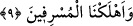

BİLMİYORSANIZ
BİLENLERDEN SORUN
7. Biz, senden önce de, kendilerine vahiy verdiğimiz kişilerden başkasını
peygamber olarak göndermedik. Eğer bilmiyorsanız bilenlerden sorun.
8. Biz onları (peygamberleri), yemek yemez birer (cansız) ceset olarak
yaratmadık. Onlar (bu dünyada) ebedî de değillerdir.
9. Sonra onlara (verdiğimiz) sözü yerine getirdik; böylece, hem onları hem de
dilediğimiz (başka) kimseleri kurtuluşa erdirdik; müsrifleri de helâk ettik.
“Biz, senden önce de, kendilerine vahiy verdiğimiz kişilerden başkasını peygamber
olarak göndermedik.” Bu cümle, önceki âyetteki onların “Bu (Muhammed), sizin gibi
bir beşer olmaktan başka nedir ki!” şeklindeki sözlerine cevaptır. Yâni, biz seni
ümmetine göndermeden evvel önceki ümmetlere ancak erkek cinsine mahsûs olmak
üzere ehil adamları peygamber gönderdik. Melek vâsıtasıyla onlara, tıpkı sana
vahyettiğimiz gibi şer‘î hükümleri, kıssaları ve haberleri vahyettik. Beşer olma
bakımından seninle onlar arasında fark olmadığı gibi vahyin ve delâlet ettiği hususların
hakîkati bakımından da sana gönderilenle onlara gönderilenler arasında fark yoktur.
Şimdi onlara ne oluyor da senin önceki peygamberlerin bir benzeri olduğunu ve sana
vahyettiğimizin onlara vahyedilene zıt olmadığını anlamıyorlar da söyledikleri o sözleri
söylüyorlar?!
et-Te’vîlâtü’n-Necmiyye’de şöyle der: “İşâret etmektedir ki Allah Teâlâ her asırda
peygamberlere tâbi olanlardan yetkin erleri ortaya çıkarır ve onlara ilhamı bahşeder.
Nitekim İsâ (a.s.) zamânında ona tâbî olan havârîleri ortaya çıkarmış ve onlara ilham
etmiştir. Nitekim Allah Teâlâ şöyle buyurmaktadır: “Hani havârîlere, ”Bana ve
peygamberime îman edin” diye ilham etmiştim.” (el-Mâide, 5/111)
“Eğer bilmiyorsanız bilenlerden sorun.” Daha önce ilâhî kitaplara “ez-zikr”
denildiği konusu geçmişti. Yâni, zikredilenleri bilmiyorsanız, ey cahil kâfirler,
şüphenizin zâil olması için önceki peygamberlerin hallerine vâkıf olan kitab ehline
sorun.
Kâfirlere böyle emredildi. Çünkü, büyük bir topluluğun verdiği bir şeyi haber